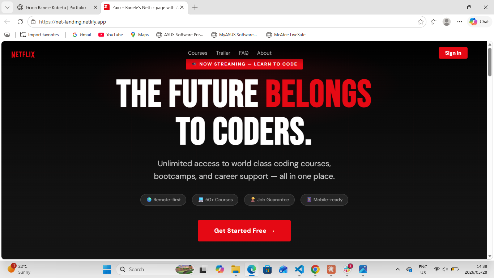

📌 Project Overview
This project is a Netflix-inspired UI clone built using HTML and CSS. The goal was to replicate a modern streaming platform interface while focusing on layout structure, visual hierarchy, and responsive design principles.
🎯 Problem Statement
Streaming platforms like Netflix use complex UI layouts with horizontal scrolling rows, featured banners, and layered content sections. The challenge was to recreate this structure using only HTML and CSS.
🧠 My Role
I worked as the frontend developer responsible for recreating the UI layout, styling components, and ensuring responsiveness across devices.
⚙️ Process
- Analysed Netflix UI structure and layout patterns
- Built hero banner section with featured content
- Created horizontal content rows using Flexbox
- Designed reusable movie card components
- Implemented responsive design for mobile screens
🖼️ UI Preview

💻 Implementation
The layout was structured using semantic HTML sections. Flexbox was used for horizontal scrolling rows, while CSS Grid handled overall page structure. Attention was given to spacing, alignment, and visual hierarchy to mimic a real streaming platform.
🧪 Challenges
One of the biggest challenges was recreating the horizontal scrolling movie rows. This was solved using Flexbox with overflow-x scroll and consistent card sizing.
🚀 Outcome
The final result is a clean Netflix-inspired UI clone that demonstrates my ability to replicate real-world interfaces using only HTML and CSS.
📚 Key Learnings
- Horizontal scrolling UI patterns
- Component-based layout thinking
- Improved Flexbox skills
- Better understanding of streaming platform UI design